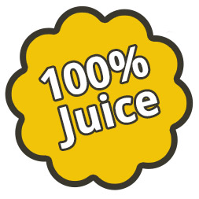
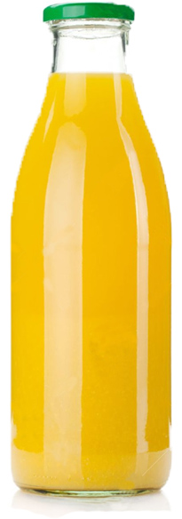
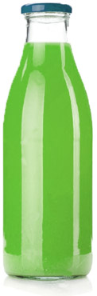
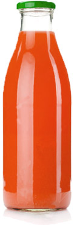
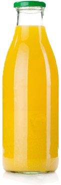
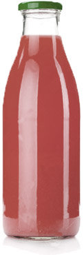
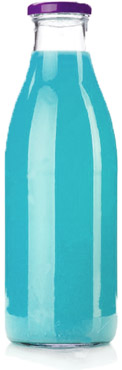
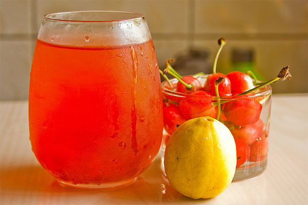

What is PENNY JUICE?


PENNY JUICE
A 100% blended fruit juice concentrate that is specifically designed for Childcare Centers, Preschools, and Head Start Programs.
- 100% Fruit Juice
- Wide Variety of Flavors
- Easy to Mix
100% JUICE

PENNY JUICE products comply with all requirements for subsidy, and nutrition, set forth by the FDA.
EASY TO MIX
PENNY JUICE mixes easily with seven parts water and one part juice concentrate.
FLAVORS
Our all natural juice blends come in six kid friendly flavors.

Lime

Lime

Lime

Lime

Lime

Lime
CLIENTS SAY
Easy, convenient, economical and the children love it! What else is there to say? We love it.-Susan Dosher
Twin Oaks Child Development Center Gulf Port, MS
PENNY JUICE has certainly been an asset to our food program. I am very happy with switching to PENNY JUICE and would recommend you in a heartbeat.-Babe Walton
Children’s Enrichment Center - N. Little Rock, AR

ORDER NOW
PENNY JUICE is specifically designed for Chilcare Centers, Preschools, and Head Start Programs.
ORDER NOW